Grafana and Prometheus
In this page we'll cover how to use Grafana and Prometheus to help you visualize important real-time metrics concerning your validator and/or beacon node.
Prometheus is an open-source systems monitoring and alerting toolkit. It runs as a service on your computer and its job is to capture metrics. You can find more information about Prometheus here.
Grafana is a tool for beautiful dashboard monitoring that works well with Prometheus. You can learn more about Grafana here.
Simple metrics
To enable the metrics server, run the beacon node with the --metrics flag:
Visit http://127.0.0.1:8008/metrics with a browser or curl.
You should see a plaintext page that looks something like this:
# HELP nim_runtime_info Nim runtime info
# TYPE nim_runtime_info gauge
nim_gc_mem_bytes 6275072.0
nim_gc_mem_occupied_bytes 1881384.0
nim_gc_heap_instance_occupied_bytes{type_name="KeyValuePairSeq[digest.Eth2Digest, block_pools_types.BlockRef]"} 25165856.0
nim_gc_heap_instance_occupied_bytes{type_name="BlockRef"} 17284608.0
nim_gc_heap_instance_occupied_bytes{type_name="string"} 6264507.0
nim_gc_heap_instance_occupied_bytes{type_name="seq[SelectorKey[asyncdispatch.AsyncData]]"} 409632.0
nim_gc_heap_instance_occupied_bytes{type_name="OrderedKeyValuePairSeq[Labels, seq[Metric]]"} 122720.0
nim_gc_heap_instance_occupied_bytes{type_name="Future[system.void]"} 79848.0
nim_gc_heap_instance_occupied_bytes{type_name="anon ref object from /Users/hackingresearch/nimbus/clone/nim-beacon-chain/vendor/nimbus-build-system/vendor/Nim/lib/pure/asyncmacro.nim(319, 33)"} 65664.0
nim_gc_heap_instance_occupied_bytes{type_name="anon ref object from /Users/hackingresearch/nimbus/clone/nim-beacon-chain/vendor/nimbus-build-system/vendor/Nim/lib/pure/asyncnet.nim(506, 11)"} 43776.0
nim_gc_heap_instance_occupied_bytes{type_name="seq[byte]"} 37236.0
nim_gc_heap_instance_occupied_bytes{type_name="seq[TrustedAttestation]"} 29728.0
...
Note
Metrics are by default only accessible from the same machine as the beacon node is running on. To fetch metrics from a remote machine, an SSH tunnel is recommended.
The metrics server offers one snapshot in time of the state of the beacon node. Metrics, however, are at their most useful when collected over time — for this, we'll need to set up two more pieces of software: Prometheus and Grafana.
Prometheus and Grafana
The following steps will take you through how to use Prometheus and Grafana to spin up a beautiful and useful monitoring dashboard for your validator and beacon node.
Steps
1. Download Prometheus
Use your favourite package manager to download Prometheus: for example apt-get install prometheus on Ubuntu, or brew install prometheus on MacOS, should do the trick.
Note
If you don't use a package manager, you can download the latest release of directly from Prometheus website. To extract it, run:
2. Copy the binary
The Prometheus server is a single binary called prometheus (or prometheus.exe on Microsoft Windows).
Copy it over to /usr/local/bin:
3. Run Prometheus with the default configuration file
Prometheus relies on a YAML configuration file to let it know where, and how often, to scrape data.
Example config file:
global:
scrape_interval: 12s
scrape_configs:
- job_name: "nimbus"
static_configs:
- targets: ['127.0.0.1:8008']
Save the above as prometheus.yml in the nimbus-eth2 repo.
Then run Prometheus:
You should see the following confirmation in the logs:
level=info ts=2021-01-22T14:52:10.604Z caller=main.go:673 msg="Server is ready to receive web requests."
4. Download Grafana
Download the latest release of Grafana for your platform. You need version 7.2 or newer.
Note
If you use a package manager, you can also download Grafana that way -- for example apt-get install grafana on Ubuntu, or brew install grafana on MacOS, should do the trick.
5. Install and start Grafana
Follow the instructions for your platform to install and start Grafana.
6. Configure login
Go to http://localhost:3000/, you should see a Grafana login screen that looks like this:
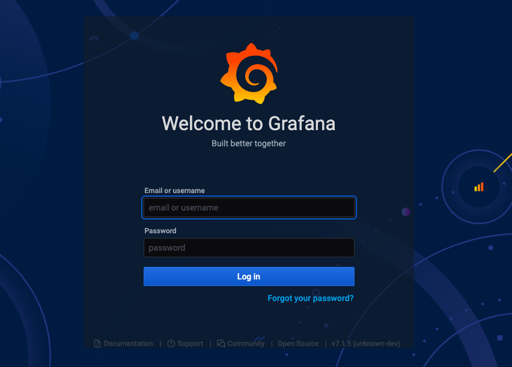
Type in admin for both the username and password.
You'll be asked to change the password (and we recommend you do so).
7. Add a data source
Hover your mouse over the gear icon in the left menu bar, and click on the Data Sources option in the sub-menu that pops up.
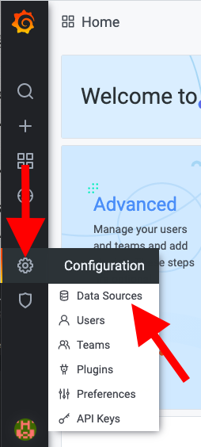
Now click on the Add Data Source button in the center of the screen
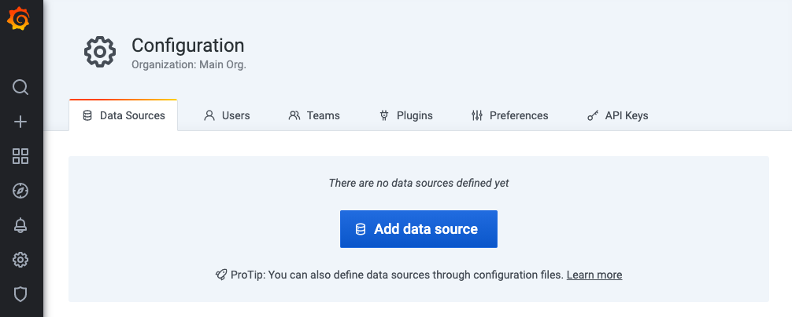
Select Prometheus
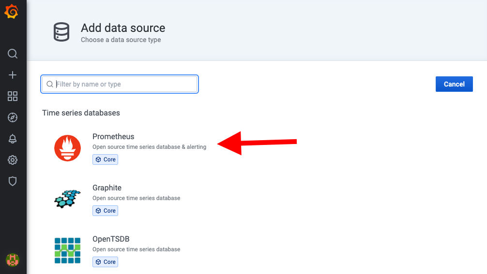
Enter http://localhost:9090 in the URL field
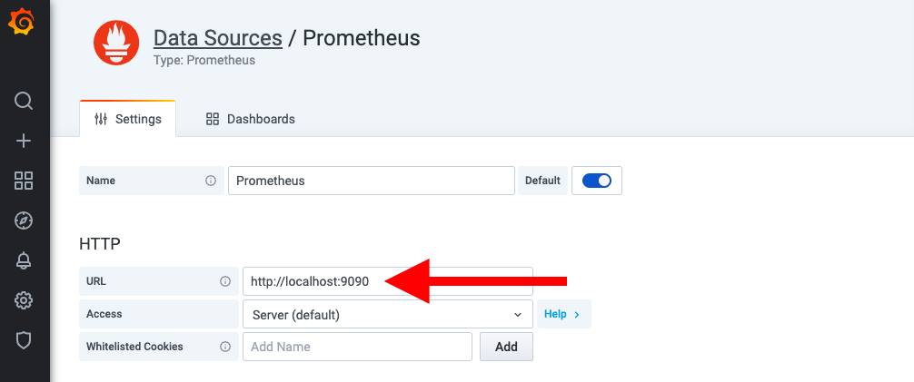
Set the "Scrape interval" field to the same value you used in the Prometheus config ("15s" in our example below).
Scroll to the bottom and click on Save and Test
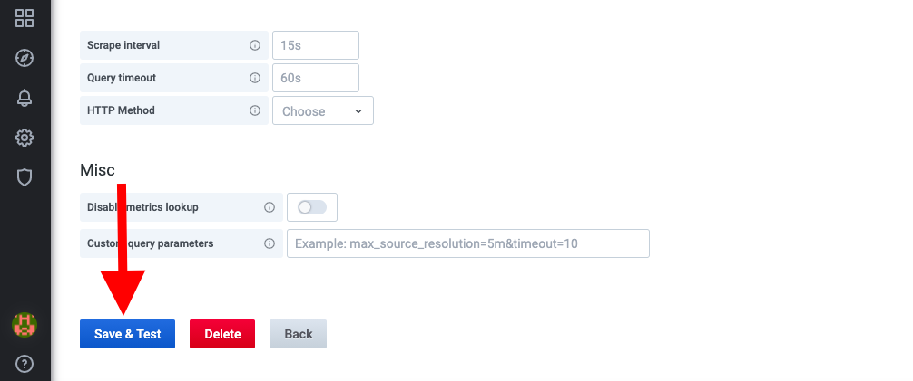
If everything is working correctly you should see a green Data source is working box pop up
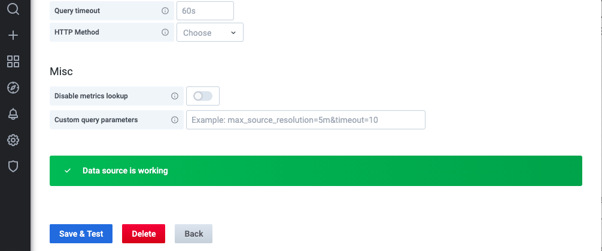
8. Import a dashboard
Now, let's import a dashboard; hover your mouse over the + icon in the left menu bar and select import from the pop-up menu
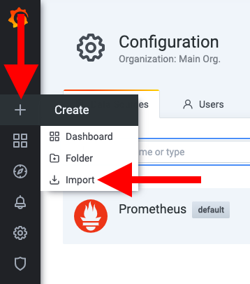
Click on Upload JSON file
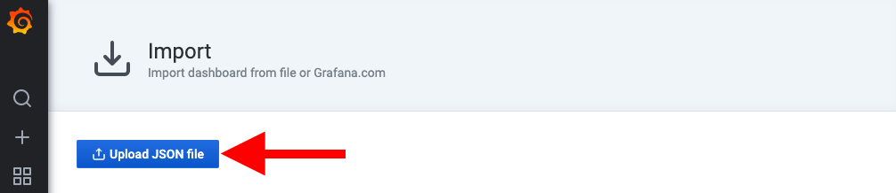
Select the beacon_nodes_Grafana_dashboard.json from the nimbus-eth2/grafana/ folder and click on Import
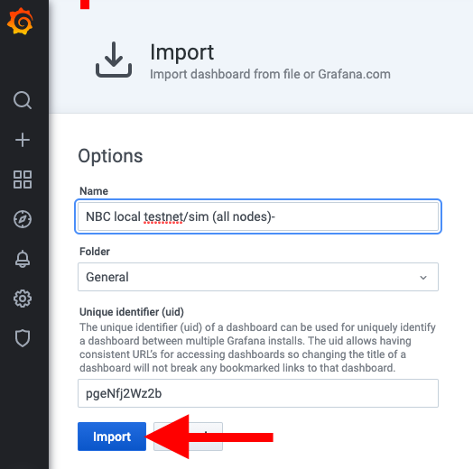
You'll be directed to the dashboard where you'll be able to gain insights into the performance of nimbus-eth2 and your validators
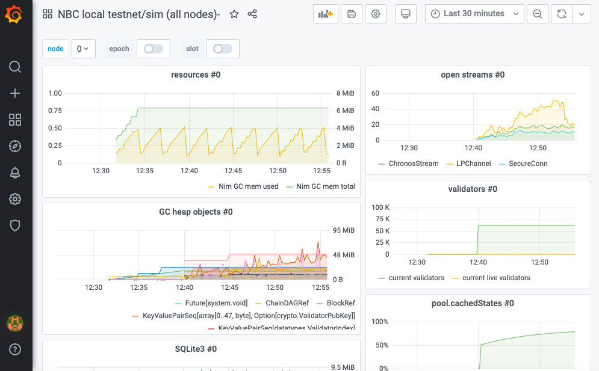
Note
The dashboard is very much a work in progress. Some of the highlights right now include received and proposed blocks, received and sent attestations, peers, memory and cpu usage stats. But keep an eye out for additional metrics in the near future.
And voilà! That's all there is to it :)
Community dashboards
Joe Clapis
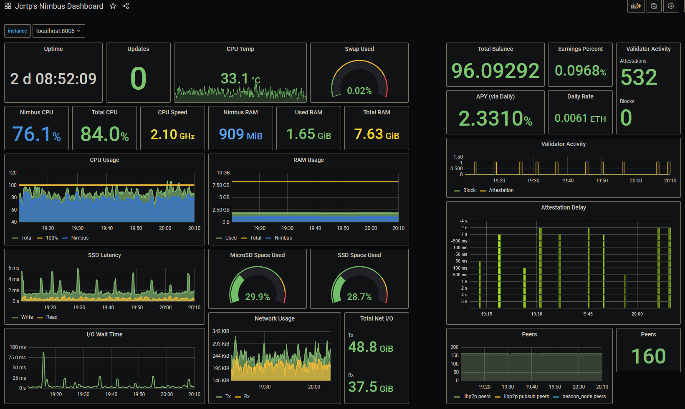
Joe — who’s done some brilliant work integrating Nimbus with Rocket Pool — has created a wonderful guide where he takes you through how to set up a Grafana server on your Pi, using his dashboard as an example.
In his words:
This captures just about every metric I think I’d like to see at a glance.
Whether or not you're running a Pi, we recommend you check out his guide.
Metanull
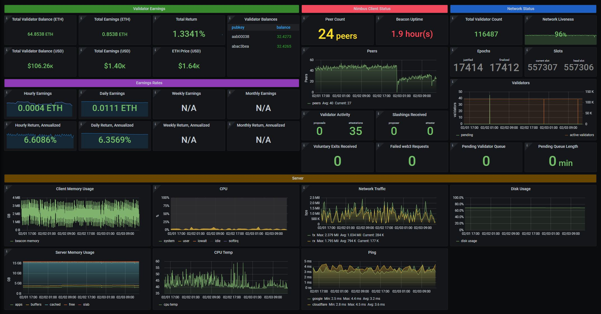
A dashboard aimed primarily at users rather than developers.
Note that this dashboard does rely heavily on three prometheus exporter tools: node_exporter for system metrics, json_exporter for ETH price, and blackbox_exporter for ping times.
The good news is that you don't need to use all these tools, as long as you take care of removing the related panels.
See here for a detailed guide explaining how to use it.